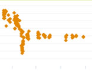
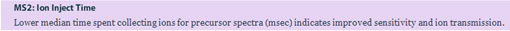
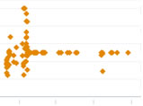

It is quite common for technicians to change mass spectrometry settings or to change columns in the LC system. This is a necessary element of running LC-MS systems , in general. However, after these settings change or columns are installed, there needs to be a way to see how these changes affect your standards with respect to Quality Control .
In this current example, we notice in the Control Charts that a couple of metrics have changed dramatically after some settings were changed. Until these graphs are viewed, the technician may not realize how much of an impact his/her changes really had on the LC-MS system. In the case, the max fill time was changed. The numbers started topping out at 100 instead of 200. While this wouldn’t likely be flagged right away (100 is smack in the middle of the 0 – 200 range), the history view would show the metric never going above 100 again. Also drastic changes made to the instrument’s settings may make the old data not comparable to the data from newer standards:



At the decrease seen on the graphs a member of lab changed the settings on the mass spectrometer. This change caused the instrument to scan faster ( Trigger Point : 3 microscans down to 1) and collect MS/MS ion for a shorter period of time (a change in Ion Inject Time from 200ms-100ms). The effects of changing settings affecting the MS2 scans can be seen in the discussed metrics.
If you have questions, comments and/or insights about MassQC , you can share them on the MassQC Users Forum .